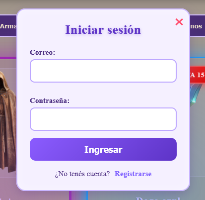
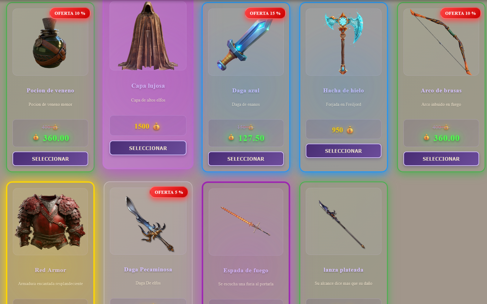
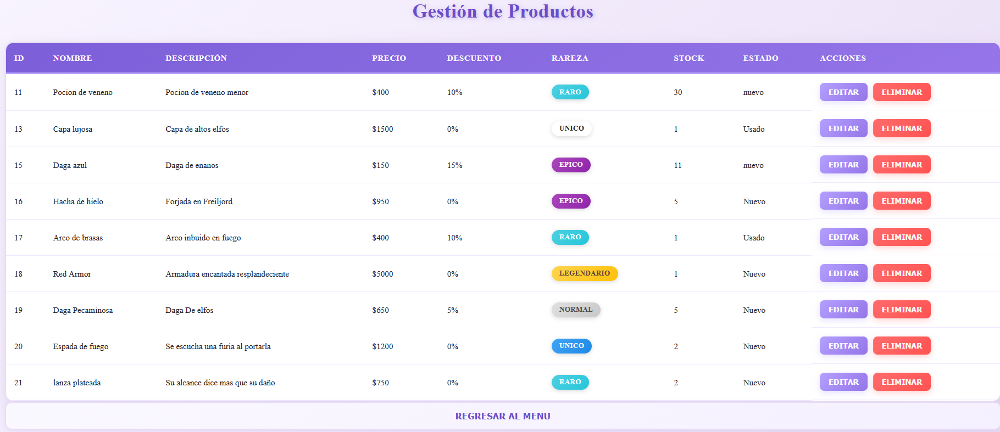
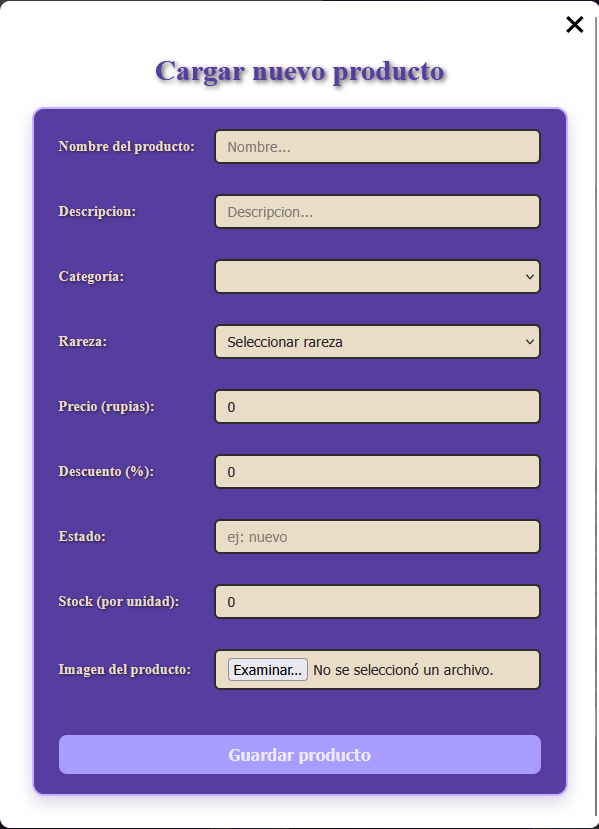
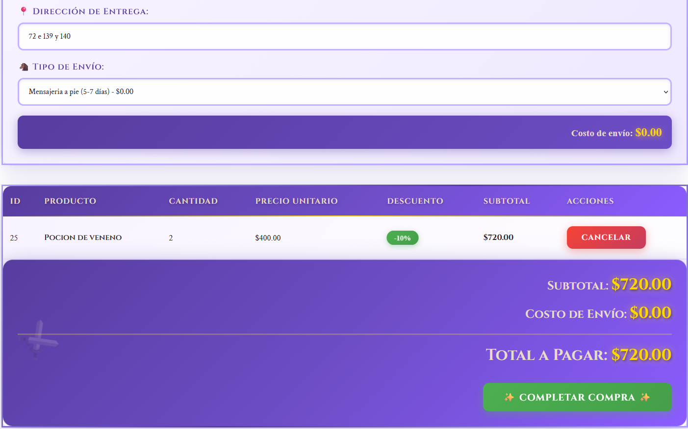
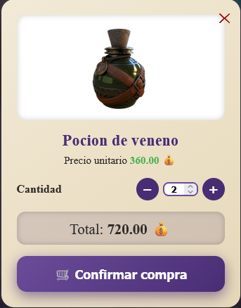

Plataforma marketplace con arquitectura RESTful, orientada a la compra y venta de productos mágicos. Sistema
desarrollado con Angular y Spring Boot aplicando metodologías ágiles.
- Autenticación y autorización de usuarios:
Sistema de registro e inicio de sesión seguro con validación de credenciales y control de accesos según roles de
usuario.

- Catálogo de productos:
Tienda con filtros por categorías (Todos, Armas, Pociones, Armaduras, Accesorios, Pergaminos), sistema de búsqueda
avanzado y visualización de ofertas destacadas con descuentos de hasta 40%.

- Gestión administrativa de productos:
Panel completo para administrar inventario con opciones de crear, editar y eliminar productos. Incluye visualización
de ID, nombre, descripción, precio, descuento, rareza, stock y estado.

- Publicación de productos:
Formulario detallado para agregar nuevos productos con campos para nombre, descripción, categoría, rareza, precio,
descuento, estado, stock e imagen del producto.

- Sistema de carrito de compras:
Carrito dinámico con selección de cantidad, cálculo automático de descuentos y subtotales. Incluye gestión de
dirección de entrega, selección de método de envío y visualización detallada de costos.

- Vista detallada de productos:
Modal interactivo con información completa del producto incluyendo imagen, precio unitario con descuento aplicado,
selector de cantidad y botón de confirmación de compra con cálculo de total en tiempo real.

- Desarrollo frontend con Angular:
Creación de componentes reutilizables y modulares para mejorar la escalabilidad y mantenibilidad del proyecto.
Implementación de servicios para consumo de APIs RESTful.
- Backend con Spring Boot:
Arquitectura RESTful con endpoints optimizados, gestión de base de datos relacional y validaciones de negocio para
garantizar alto rendimiento y seguridad.
- Metodologías ágiles y trabajo full stack:
Aplicación de prácticas de desarrollo ágil, versionamiento con Git, integración continua y trabajo colaborativo
integrando frontend y backend.